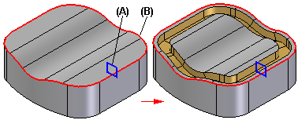

Swept Cutout command
Use the Swept Cutout command to construct a cutout by extruding a cross section (A) along a path you define (B).

You can define up to three paths and many cross sections. To define the path curves and cross sections, you can:
-
In synchronous modeling:
Draw the profiles as you construct the feature.
-
Select elements from an existing sketch.
-
Select edges on the model or a construction body.
When constructing swept features with three paths, after you select the third path, the command automatically proceeds to the Cross Section Step.
The cross sections must be closed and they can be planar or non-planar. You can place the cross sections anywhere along the path. For predictable results, it is best if the cross sections intersect all paths.
When using more than one path or cross section, each path curve must be a continuous set of tangent elements or edges.
How do I
Construct a swept protrusion or cutoutConstruct a Solid Sweep Protrusion
Construct a Solid Sweep Cutout
Learn more
Constructing swept featuresLook up more details
Swept Protrusion commandSwept Protrusion command bar
Sweep Options dialog box
Swept Cutout command bar
Solid Sweep Protrusion command
Solid Sweep Cutout command
Solid Sweep Cutout command bar